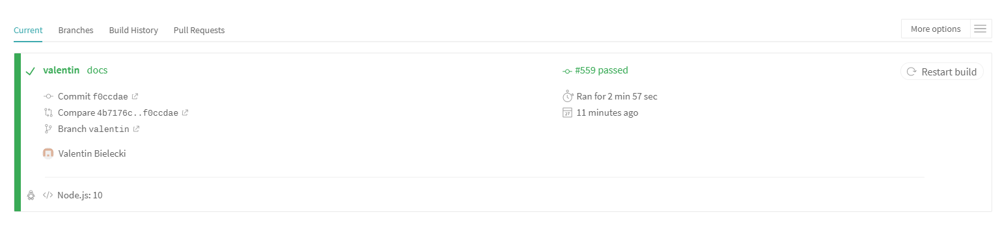

YAML File
In order to run travis using GitHub, we need to add a YAML file called .travis.yml
This file will tell Travis CI what to do.
We are using Version 10 NodeJS.
The install part runs:
"npm install" which will install and update the package.json and package-lock.json files
"npm install codeclimate-test-reporter istanbul -g" used for the codeclimate reporting
It is running lint then mocha and then saucelabs.
We have one functional addon:
Our code climate repository token which is used to send the test report and update the result in CodeClimate
If there is no issue, Travis will run the coverage section. It is refering to a line in the package.json file and will update the report to CodeClimate.
Since we are using SauceLab, we added another addon on the travis website to have a link with the SauceLab account.
Travis-ci.com
Now in case the badge shows Build=Failing, you need to check what is wrong on https://travis-ci.com/. Sign in with GitHub, you should see this.
Now let's look at what Travis executed. You first need to know that if every single test passes, by default it will exit with 0.
Depending on your error, you can have a different output and check what is wrong.
Travis installs what we asked in the install section of the yaml file. It then runs the test phase.
As I mentionned in the Package.json tutorial, this phase has different parts. Travis will start with the prestest then eventually the main tests.
Here our pretest is just checking css stylelint and eslint on our webcomponents. It then runs the unit tests and finally runs browser testing.
We have no error, we can run the command.
after_success: npm run coverage
We didn't have any issue, our modified components pass the linting, unit tests and browser tests. The build exited with 0 so Travis will tell us the build is passing.
Last thing, whenever you update your branch, Travis will run a build. So make sure you check that out and create your own badge!